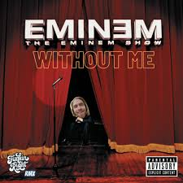

Eminem – “Without Me”
Without Me — культовий сингл американського репера Емінема, що вийшов у 2002 році як провідний трек його третього студійного альбому The Eminem Show. Пісня стала миттєвим хітом і швидко піднялася у верхівки світових чартів, увійшовши до топ-10 Billboard Hot 100 та багатьох європейських рейтингів. Стиль треку поєднує характерний для Емінема швидкий, чіткий флоу з насиченим біт-продакшеном Dr. Dre, створюючи енергійний, майже карикатурний саунд.
За змістом композиція — це дотепне й гостре повернення артиста після короткої паузи.
У тексті він з іронією висміює попкультуру, медіа й своїх критиків, заявляючи, що індустрії бракує саме його провокаційного стилю. Музичне відео підсилює цей настрій: Емінем і Dr. Dre постають у ролях супергероїв, рятуючи світ від нудьги хіп-хопу.
Without Me отримала премію “Ґреммі” за найкраще музичне відео та досі вважається однією з найвпливовіших робіт репера, що визначила подальший розвиток його кар’єри й закріпила статус культурного феномена початку 2000-х.
| Основні версії треку |
| Radio Edit |
| Album Version |
| Instrumental |

Слухати на Spotify